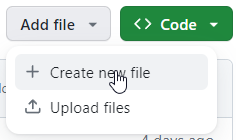
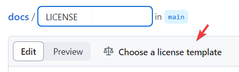
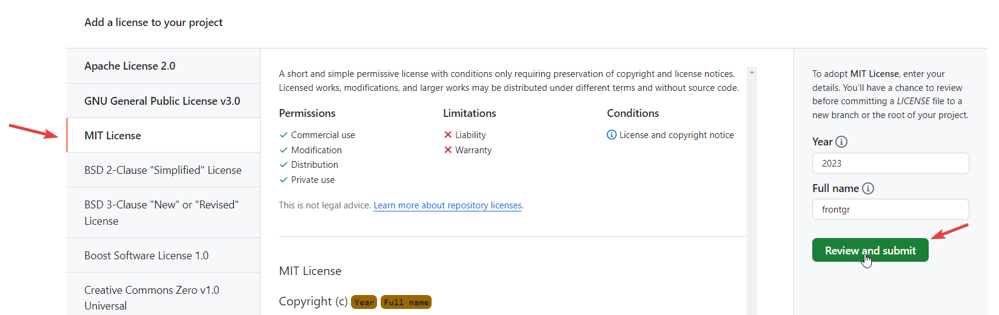

Пример-шаблон README
README пишутся коротко, по сути, на английском. За основу README брать README FUNHAUS-a.
<Название проекта>
Короткое описание проекта. Тут должна быть ссылка на деплой.
Preview of the project
Тут должен быть скриншот(ы) проекта и ссылка на макет, если есть, например так..
Technologies Used
Тут идет нумерованный список технологий, которые используются, например:
- BEM notation
- SCSS
- Docker
- Vanilia JS
Ниже указываются другие технические особенности, например, что в проекте есть слайдеры, кастомные курсоры и т.п.
Formatting rules
Пишем о том, что в проекте мы используем правила форматирования Prettier, в такой форме:
We use Prettier for formatting our text. See more about our configuration here.
How to run Docker
Указываем, как запустить Docker:
You should clone the repository, install Docker and run this command in the same directory:
You can read more about Docker here.
Указываем, что в проекте есть лицензия:
Project has MIT License.
Важно - в каждом проекте нужна лицензия MIT
Добавляем файл:

Пишем в названии LICENSE и нажимаем на Choose a license template:

Выбираем слева MIT License, пишем год и имя нашей организации коммитим изменения:

MD-версия README FUNHAUS
# FUNHAUS
Simple website of architecture company. Deploy you can check [here](https://frontgr.github.io/funhaus/).
## Preview of the project

Link to Figma layout is [here](https://www.figma.com/file/VYw8ju5ToInkoS4C4XaQ2R/Fun-Haus-v1.0?type=design&node-id=0%3A1&mode=design&t=Hh5f9Jmwv0K7C4p7-1).
---
### Technologies Used
1. BEM notation
2. SCSS
3. Docker
4. Vanilia JS
Also FUNHAUS has slider, custom cursor and theme changing.
---
### Formatting rules
We use Prettier for formatting our text. See more about our configuration [here](https://frontgr.github.io/docs/prettierrc/prettierrc/).
---
### How to run Docker
You should clone the repository, install Docker and run this command in the same directory:
```bash
docker-compose up --build
```
You can read more about Docker [here](https://frontgr.github.io/docs/docker/docker/).
---
Project has [MIT License](https://github.com/frontgr/funhaus/blob/main/LICENSE).